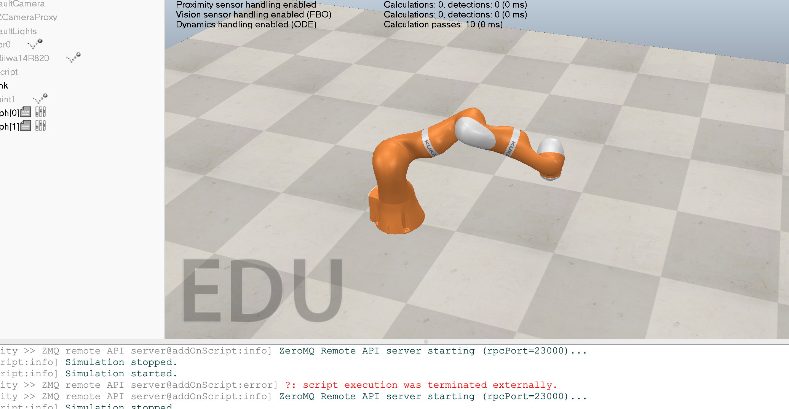
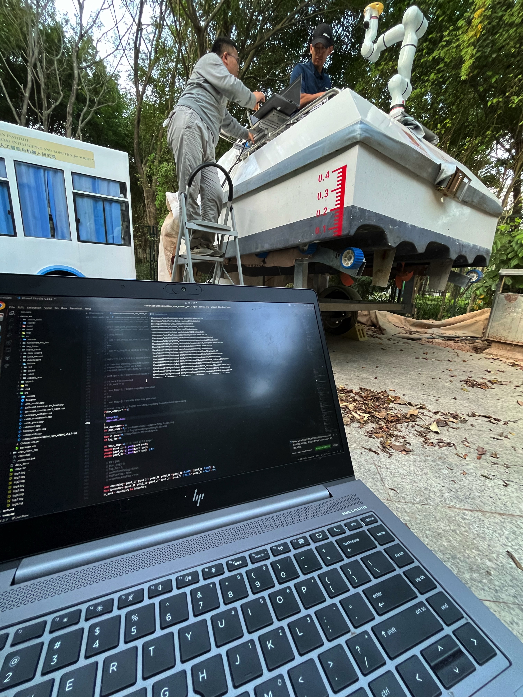
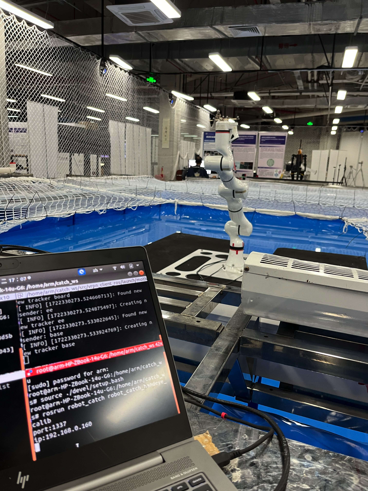
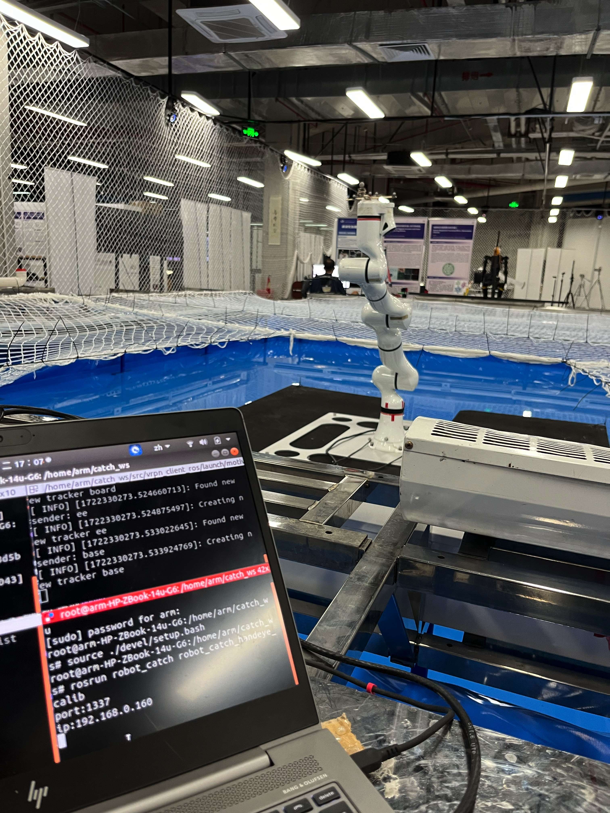

Model Predictive Control (MPC) Development for Robot Manipulators

Undergraduate Research Assistant, Supervisor: Prof. Huihuan Qian & Postdoc Ruoyu Xu
Sep. 2022 - Current, Shenzhen, China
- Combine MATLAB with CoppeliaSim to implement MPC-based joint control for a robotic arm and UAV;
improved the robotic arm's grasping algorithm, increasing precision by approximately 10%.
- Carry out pre-work by performing a comprehensive literature review on robotic arms, including
both conventional and tendon-driven manipulators, to propose innovative ideas for advancing
kinematic control during group meetings.
- Improve grasping precision, achieving high-precision docking and seamless object handoffs
between the robotic arm, UAV, and vessel in dynamic environments.



Development of a Load Generator for Root Cause Analysis Benchmark
Undergraduate Research Assistant, Supervisor: Prof. Pinjia He
Mar. 2024 - Sep. 2024, Shenzhen, China
- Upgraded a ticketing system's web backend using Spring Boot and Java, handling multiple
microservices and large datasets to support AIOps and testing functions.
- Developed a load generator in Go to simulate high volumes of web traffic and stress-test
microservices, identifying bottlenecks and improving system resilience.
- Optimized the performance, scalability, and reliability of microservices based on the findings
from stress tests, ensuring efficient handling of peak traffic and data loads.
Electrocorticography (ECoG) and Speech Separation in Brain-Computer Interface Research
Undergraduate Research Assistant, Supervisor: Prof. Haizhou Li
Jan. 2023 - Nov. 2023, Shenzhen, China
- Researched Signal-to-Noise Ratio (SNR) and Ideal Binary Mask (IBM) in speech separation, and
assisted in experiments on Brain-Computer Interface (BCI) development using ECoG signals.
- Explored speech separation techniques, especially methods for multi-speaker separation using a
single microphone, applying advanced techniques such as neural network-based models and
spectrogram analysis to enhance speech separation accuracy.
 
